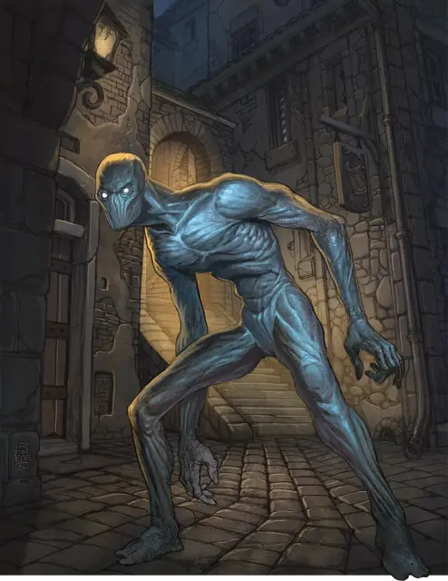

Доппельгангер
Doppelganger
Среднее Чудовище, Нейтральное

Класс Защиты 14 Инициатива +4 (14)
Хиты 52 (8к8 + 16)
Скорость 30 футов
| мод | спас | ||
|---|---|---|---|
| СИЛ | 11 | +0 | +0 |
| ЛОВ | 18 | +4 | +4 |
| ТЕЛ | 14 | +2 | +2 |
| мод | спас | ||
|---|---|---|---|
| ИНТ | 11 | +0 | +0 |
| МДР | 12 | +1 | +1 |
| ХАР | 14 | +2 | +2 |
Иммунитеты Очарованный
Чувства Тёмное зрение 60 футов, пассивное Восприятие 11
Языки Общий
Опасность 3 (700 опыта; БВ +2)
Действия
Мультиатака. Доппельгангер совершает две атаки Размашистым ударом и использует Тревожный облик, если он доступен.
Размашистый удар. Бросок рукопашной атаки: +6 (с Преимуществом в первом раунде каждого боя), досягаемость 5 фт. Попадание: 11 (2к6 + 4) Дробящего урона.
Чтение мыслей. Доппельгангер сотворяет Обнаружение мыслей, не нуждаясь в компонентах (заклинательная характеристика — Харизма, Сл спасброска заклинаний 12).
Тревожный облик (Перезарядка 6). Спасбросок Мудрости: Сл 12, каждое видящее доппельгангера существо в 15-футовой Эманации, исходящей от него. Провал: Цель становится Испугана и повторяет спасбросок в конце каждого своего хода, оканчивая этот эффект при успехе. Спустя 1минуту она автоматически преуспевает в спасброске.
Бонусные действия
Перевоплощение. Доппельгангер либо перевоплощается в Гуманоида Маленького или Среднего размера, либо возвращается в свою истинную форму. Его статистика, кроме размера, не меняется в зависимости от формы. Снаряжение, которое он носит или несёт, не трансформируется.
Бонус мастерства +2
Среда обитания Город, Подземье
Сокровища Личные
Доппельгангер
Перевоплощающийся лазутчик
Доппельгангеры — это сверхъестественные существа, которые способны принять любой человекоподобный облик. Способность читать мысли помогает им создать практически идеальную маскировку и выуживать секреты из незащищённых умов. Иногда доппельгангеры могут демонстративно перевоплотиться прямо перед врагами, чтобы напугать их процессом или принятым обликом.
Замыслы доппельгангера могут быть связаны с тайной его волшебного происхождения или его корыстными желаниями. Совершите бросок по таблице «Афёра доппельгангера» для вдохновения или выберите сами план доппельгангера.
Афёра доппельгангера
| 1к6 | Доппельгангер планирует... |
| 1 | Посеять хаос в храме божества, проклятие которого не даёт ему принять истинный облик. |
| 2 | Скрыть доказательства масштабного заговора. |
| 3 | Подчинить поселение с помощью страха, выдавая себя жуткого призрака из легенд. |
| 4 | Занять место дворянина, чтобы вести роскошную жизнь. |
| 5 | Шпионить за волшебниками, чтобы узнать, как завершить своё собственное неумелое творение. |
| 6 | Занять влиятельный пост и действовать как спящий агент до нападения его собратьев. |